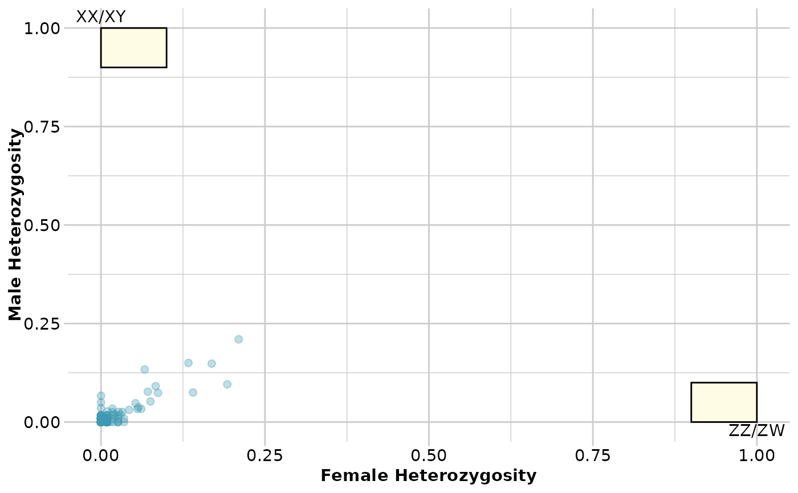

Alleles unique to the Y or W chromosome and monomorphic on the X chromosomes will appear in the SNP dataset as genotypes that are heterozygotic in all individuals of the heterogametic sex and homozygous in all individuals of the homogametic sex. This function keeps or drops loci with alleles that behave in this way, as putative sex specific SNP markers.
gl.filter.sexlinked(
x,
sex = NULL,
filter = NULL,
read.depth = 0,
t.het = 0.1,
t.hom = 0.1,
t.pres = 0.1,
plot.out = TRUE,
plot_theme = theme_dartR(),
plot_colors = three_colors,
verbose = NULL
)Arguments
- x
Name of the genlight object containing the SNP or presence/absence (SilicoDArT) data [required].
- sex
Factor that defines the sex of individuals. See explanation in details [default NULL].
- filter
Either 'keep' to keep sex linked markers only or 'drop' to drop sex linked markers [required].
- read.depth
Additional filter option to keep only loci above a certain read.depth. Default to 0, which means read.depth is not taken into account [default 0].
- t.het
Tolerance in the heterogametic sex, that is t.het=0.05 means that 5% of the heterogametic sex can be homozygous and still be regarded as consistent with a sex specific marker [default 0.1].
- t.hom
Tolerance in the homogametic sex, that is t.hom=0.05 means that 5% of the homogametic sex can be heterozygous and still be regarded as consistent with a sex specific marker [default 0.1].
- t.pres
Tolerance in presence, that is t.pres=0.05 means that a silicodart marker can be present in either of the sexes and still be regarded as a sex-linked marker [default 0.1].
- plot.out
Creates a plot that shows the heterozygosity of males and females at each loci be regarded as consistent with a sex specific marker [default TRUE].
- plot_theme
Theme for the plot. See Details for options [default theme_dartR()].
- plot_colors
List of three color names for the not sex-linked loci, for the sex-linked loci and for the area in which sex-linked loci appear [default three_colors].
- verbose
Verbosity: 0, silent or fatal errors; 1, begin and end; 2, progress log; 3, progress and results summary; 5, full report [default NULL, unless specified using gl.set.verbosity].
Value
The filtered genlight object (filter = 'keep': sex linked loci, filter='drop', everything except sex linked loci).
Details
Sex of the individuals for which sex is known with certainty can be provided
via a factor (equal to the length of the number of individuals) or to be held
in the variable x@other$ind.metrics$sex.
Coding is: M for male, F for female, U or NA for unknown/missing.
The script abbreviates the entries here to the first character. So, coding of
'Female' and 'Male' works as well. Character are also converted to upper
cases.
' Function's output
This function creates also a plot that shows the heterozygosity of males and females at each loci for SNP data or percentage of present/absent in the case of SilicoDArT data.
Examples of other themes that can be used can be consulted in
See also
Other filter functions:
gl.filter.allna(),
gl.filter.callrate(),
gl.filter.heterozygosity(),
gl.filter.hwe(),
gl.filter.locmetric(),
gl.filter.maf(),
gl.filter.monomorphs(),
gl.filter.overshoot(),
gl.filter.pa(),
gl.filter.parent.offspring(),
gl.filter.rdepth(),
gl.filter.reproducibility(),
gl.filter.secondaries(),
gl.filter.taglength()
Examples
# \donttest{
out <- gl.filter.sexlinked(testset.gl, filter='drop')
#> Starting gl.filter.sexlinked
#> Processing genlight object with SNP data
#> Warning: genlight object contains monomorphic loci
#>
#>
#> Starting gl.filter.sexlinked
#>
#> Number of females: 114
#> Number of males: 120
#> Sex ratio females:(males+females): 0.49
#> No sex linked markers consistent with female heterogamety (ZZ/ZW)
#> No sex linked markers consistent with male heterogamety (XX/XY)
#>

#> No sex-linked loci identified and filter option was 'drop', therefore the
#> genlight object is returned unchanged.
#> Completed: gl.filter.sexlinked
#>
# }
out <- gl.filter.sexlinked(testset.gs, filter='drop')
#> Starting gl.filter.sexlinked
#> Processing genlight object with Presence/Absence (SilicoDArT) data
#> Warning: genlight object contains monomorphic loci
#>
#>
#> Starting gl.filter.sexlinked
#>
#> No sex linked markers consistent with female heterogamety (ZZ/ZW)
#> No sex linked markers consistent with male heterogamety (XX/XY)
#>
 #> No sex-linked loci identified and filter option was 'drop', therefore the
#> genlight object is returned unchanged.
#> Completed: gl.filter.sexlinked
#>
#> No sex-linked loci identified and filter option was 'drop', therefore the
#> genlight object is returned unchanged.
#> Completed: gl.filter.sexlinked
#>